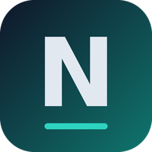

NoxRift
Deine Zentrale als App mit eigenem Symbol.
⬇️ App herunterladen (Android)- Antippen und warten, bis der Download fertig ist.
- Die Datei „NoxRift.apk“ öffnen.
- Wenn das Handy fragt: „Aus dieser Quelle zulassen“ einschalten, dann „Installieren“.
Die App öffnet NoxRift in Chrome mit deiner bestehenden Claude-Anmeldung. Sie selbst speichert nichts – deine Daten bleiben in deinem Claude-Konto.
Ohne App öffnen